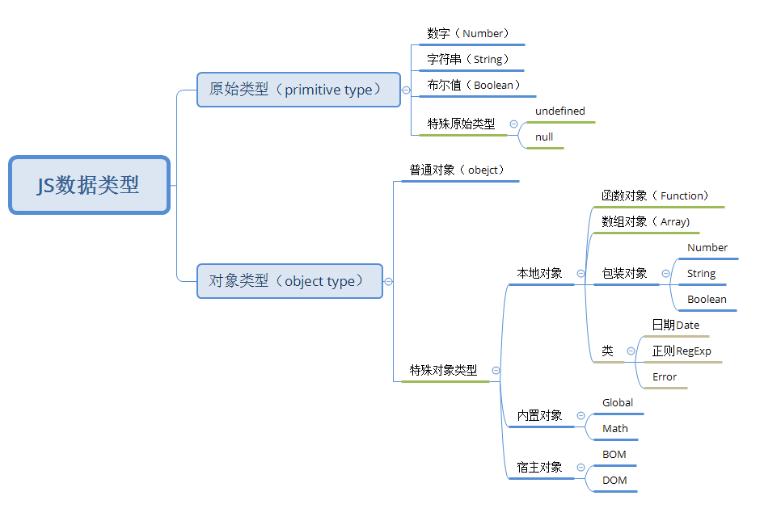

JS数据类型
数据类型分类

- 基本类型(Primitive Type)
- 数字(Number)
- 字符串(String)
- 布尔(Boolean)
- undefined
- null
- 引用类型(Object Type)
- 普通对象（Object）
- 特殊对象
- 本地对象
- 函数对象（Function)
- 数组对象(Array)
- 包装对象(Number,String,Boolean)
- 内置对象(Global,Math)
- 宿主对象(BOM,DOM)
- 本地对象
Null
- null是一个空对象指针
- typeof null //object(不要检测null的类型)
- null==undefined //true
如果初始化一个空变量用于储存对象
var a=null
NaN 非数字
当计算或者类型转换时，遇到非数字的情况，所返回的值
- NaN == NaN // false （不要用NaN检验NaN）
- NaN + 1 // NaN （任何数字加NaN等于NaN）
检测非数字函数 isNaN()
JavaScript提供了isNaN来检测某个值是否为NaN，但是，这也不太精确的，因为，在调用isNaN函数之前，本身就存在了一个隐式转换的过程，它会把那些原本不是NaN的值转换成NaN的
isNaN("foo"); // true
isNaN(undefined); // true
isNaN({}); // true
isNaN({ valueOf: "foo" }); // true
检测NaN最佳方案(推荐)
function isReallyNaN(x) {
return x !== x;
}
//只有NaN是自己不全等于自己的,所以可以写个函数用于检测
数据类型的转换
转换成字符串
显式转换
- .toString()方法 - 大多数类型可用
- String()函数 - 针对没有toString方法的值，undefined,null
简易转换
- 拼接字符串
var a = num + ""
- 拼接字符串
隐式转化
- 数学+运算
num+"str"
- 数学+运算
转换成数字
显式转换
- Number()函数 - 对所有值有效，遇到非数字值返回NaN
- parseInt()函数 - 期望转化为整数时使用，遇到第一个非数字返回，首位即非数字返回NaN
- parseFloat()函数 - 期望转化为浮点数时使用，遇到第二个点和非数字返回，首位即非数字返回NaN
简易转换
- +-0字符串转换
+str取正-str取负str - 0取值
- +-0字符串转换
隐式转换
- 数学-*/运算:
num-"str"
- 数学-*/运算:
转换成布尔值
显式转换
- Boolean函数 - 其他类型转化布尔值，false值：空字符串，0，NaN，null，undefined
简易转换
- !!方法
var a = !!x
- !!方法
隐式转换
- ==
- 逻辑运算if(),||，&&
转换对象
对象的类型转换规则共分为4种情况。
- object to boolean： 所有的对象都是真值，即转换成 true。这里注意 new Boolean(false) 返回的是一个对象，所以转换成 true。
- object to number: 优先调用 valueOf，如果未返回一个原始值，则调用 toString，如果都未返回原始值，则 throw TypeError。
- object to string：优先调用 toString，如果未返回一个原始值，则调用 valueOf，如果都未返回原始值，则 throw TypeError。
- object to primitive value
看起来好像还挺简单的样子，其实就是这么简单，只不过有一个特例需要记住。
+运算符可以用来做数学加运算，也可以用来做字符串拼接, 与此同时还有==与!=运算符，如果使用这三个运算符时，操作数存在 object 类型的话，那么 object 并不是使用的 object-to-number 或 object-to-string 规则去获得原始值，而是使用 object-to-primitive 规则。
object-to-primitive 规则
- 对于 + 、
==、!= 三个运算符来说，一般的 object 会走 object-to-number，也就是先调用 valueOf。而特殊的一点时，Date 走 object-to-string 规则，也就是先调用 toString。 - 对于其他的操作符，比如关系操作符，<、>、<=、
===等，所有对象包括Date都会走 object-to-number 规则。 link
转换值对照表

隐式转换
隐式转换是当两个数进行运算时，先自动转换成同一类型，在运算
隐式转换的几种情况
- ==时
'3'==3 //true - 数学运算时 +会转字符串为主，-*/%会转数字为主
- “真假值运算”，比如，if(), ||, &&
数据类型检测
typeof(检测数据类型)
typeof varible //alert(typeof a)
(对变量或值调用 typeof 运算符将返回(字符串)下列值之一)
| 检测类型 | 返回值 |
|---|---|
| undefined | undefined |
| boolean | boolean |
| string | string |
| symbol | symbol (ES6新增) |
| function | function |
| 内置函数对象(Array等) | function |
| object | object |
| null | object |
typeof(Function) // function (Function是函数对象)
typeof(new Function) // function (new Function也是是函数对象，同等：var func = function(){})
typeof(Array) // function (Array是函数对象)
typeof(new Array) // object（实例化的Array就是object）
typeof null // object，空是对象类型
typeof undefined // undefined,未声明和声明未赋值的值都是undefined
typeof [] // object
instanceof（检测对象）
- instanceof 运算符用来测试一个对象在其原型链中是否存在一个构造函数的 prototype 属性。
`[] instanceof Array; // true
var a = {}; a instanceof Array; // false a instanceof Object; // true
//如果变量是String, Number或者Boolean类型，使用instanceof操作符始终返回false
> 如果要判断某个对象是否是某种具体引用类型，使用instanceof操作符就可以解决。但如果是想知道一个对象的具体类型（具体哪种基本类型、引用类型），使用instanceof就不合理了，总不能一个个去试。
#### （推荐）使用Object.prototype.toString.call(obj)可以判断某个对象的具体类型。
Object.prototype.toString.call([]); // "[object Array]" Object.prototype.toString.call(new Date()); // "[object Date]" Object.prototype.toString.call({}); // "[object Object]"
---
#### 技巧：检测传参函数
当检测传参是否存在时，直接用if（true)不安全，因为会有隐式转换的问题，比如0，最好的办法是用验证if(!x)
function point(x, y) { if (!x) { x = 320; } if (!y) { y = 240; } return { x: x, y: y }; }
另一个方式是传参和undefined做比较
if (x === undefined) { pass; }
`
技巧：如何使用谷歌浏览器，快速的检查数据类型？
字符串的颜色是黑色的，数值类型是蓝色的，布尔类型也是蓝色的，undefined和null是灰色的